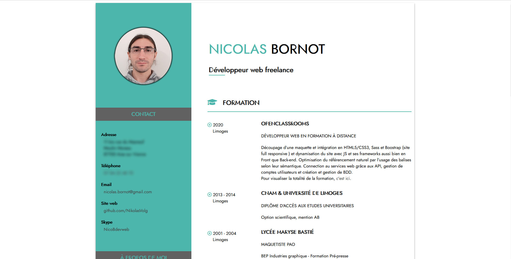

Curriculum Vitae
Reproduire un CV à partir d'une maquette donnée (format desktop) et le rendre responsive. Liberté était donnée sur le choix des couleurs et des icônes.
Hey, je m'appelle Nikolas.
Passionné depuis l’adolescence par le domaine de l’informatique, j’ai découvert les langages du web au lycée. J’ai acquis de nombreuses compétences telles que l’automomie et la rigueur, que je suis tout disposé à mettre au service de votre entreprise !
HTML5
CSS3
SASS
Javascript
Vue.js
Sequelize
 Node.js
Node.js
MongoDB
MySQL
VS Code
Linux
GIT
SEO
InDesign
Photoshop
Illustrator
Curieux
Flexible
Enthousiaste
Consciencieux
Esprit d'équipe
Esprist d'analyse
Reproduire un CV à partir d'une maquette donnée (format desktop) et le rendre responsive. Liberté était donnée sur le choix des couleurs et des icônes.

Produire le site MVP avec animation en CSS pour "OhMyFood", à partir d'une maquette donnée (format desktop), à adapter au format mobile et tablette

Analyse de l’état actuel de SEO du site fourni. Ajouter la bonne pratique à mettre en place pour chaque partie du site qui n’est pas optimisée, en citant les sources. Amélioration du SEO du site. Ensuite, optimiser le site en appliquant les 10 recommandations à son contenu et à son code source. Puis fournir un rapport d'optimisation ainsi qu'un rapport de comparaison pour les 10 recomandations.

A partir d'un back fourni il fallait construire le front devant contenir 4 pages.
La page d'accueil contenant l'ensemble des produits récupérer par un appel API.
La page spécifique au produit sélectionné par l'utilisateur.
La page panier récapitulant les produits choisis par le l'utilisateur ainsi que la totalité du prix.
La page de confirmation qui renvoie le numéro de commande.

A partir d'un front fourni construire le back-end et la DB. Implémenter le CRUD pour gérer, une inscription et une connexion d'un utilisateur. Ainsi, que l'ajout d'une sauce, sa modification ou sa suppresion. Mais également, un système de like/dislike.

Création d'un réseau social d'entreprise (entreprise fictive). Création/suppression de compte utilisateur. Publication de texte/image ou les deux avec possibilité de suppression. Création d'un administrateur ayant tous les droits.